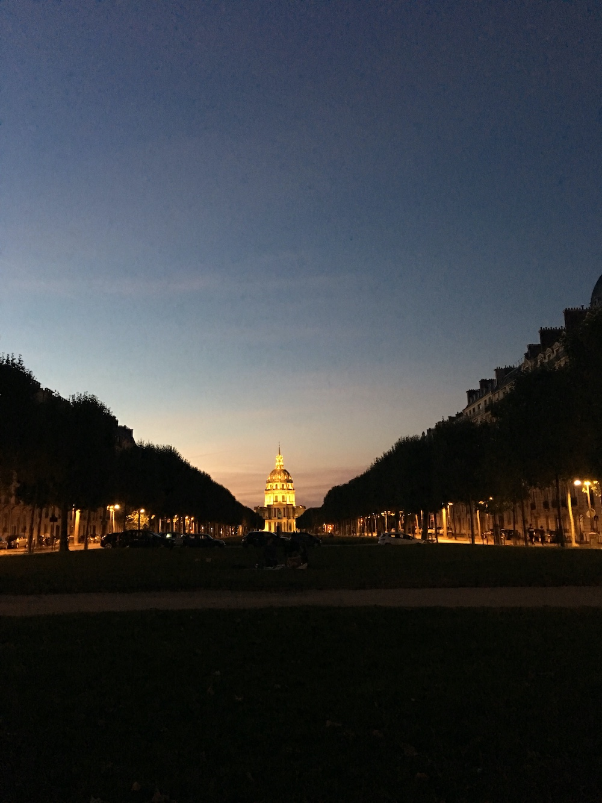

Europe Part 2 - France #
Caen #
I stayed with a lovely couple in Caen. They were both school teachers off for the summer, and offered me a terrific breakfast each morning as well as (her words, not mine) a goodbye french kiss before I left. (just on the cheek).
Before I did leave, I spent time wandering the beautiful and small but very old village. I saw a few castles and spent my birthday night in what seemed to be the only pub in town- The Vertigo. I managed to communicate through broken french that it was my birthday, and made several friends for the night who bought me a few drinks.
Paris #
My next stop was Paris. It was here that my trusted Birkenstock sandles broke and I found a sporting goods store with cheap shoes and socks that would last me the rest of the trip. I saw all the usual sights, of course. I’m really glad I took the time to visit the Notre Dame. It wasn’t actually high on my list, but I managed to wander my way near it anyway.
The Louvre #
I blocked out an entire day for the Louvre, only realizing afterwards that I really should have blocked out a week. But I had a lot of ground I wanted to cover, and only 6 weeks. So I chose to be economical with my time and stayed in Paris only 3 days. Even so, The Louvre was by far my favorite part of Paris.
Goodbye #
One of the highlights of Paris was I happened to be their during my host’s birthday, so I got invited to a birthday party with a bunch of Parisians! We found a spot of grass on the Promenade and had wine and played games. It was one of the most memorable nights of the trip. :)
